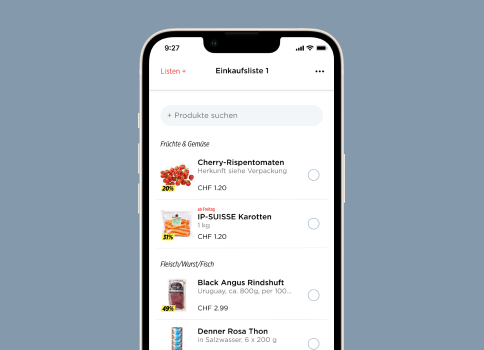
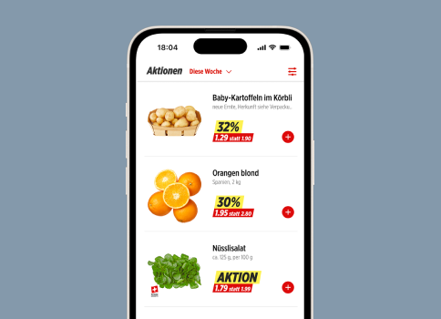
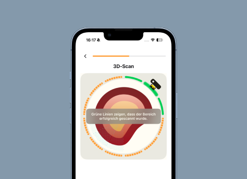

Denner App Einkaufsliste
Kaum genutzte Einkaufsliste führte zu schlechten Bewertungen und entgangenen Käufen. Ich identifizierte und priorisierte das Problem und optimierte das Feature end-to-end:
- Nutzung-Erhöhung von 28%
- CSAT-Score 90%
Product Owner mit fünf Jahren Erfahrung und Schwerpunkt auf UX Research und UX Design. Masterabschluss in Business Innovation (HSG) sowie kurz vor dem Abschluss des MAS in Human Computer Interaction Design (OST).
Als kreativer Problemlöser verbinde ich interdisziplinäres Denken mit fundierten Analysefähigkeiten, um den Erfolg digitaler Produkte voranzutreiben. Mit ausgeprägter Neugier identifiziere ich kontinuierlich neue Bedürfnisse der Nutzerinnen und Nutzer – und übersetze sie in wirkungsvolle Produktlösungen.

Kaum genutzte Einkaufsliste führte zu schlechten Bewertungen und entgangenen Käufen. Ich identifizierte und priorisierte das Problem und optimierte das Feature end-to-end:

Research und Design-Entwicklungen, um die wahrgenommene Übersicht zu verbessern.

Konzeption, Prototyping und Validierung einer neuen Guidance für die LiDAR-basierte 3D-Wunddokumentation.